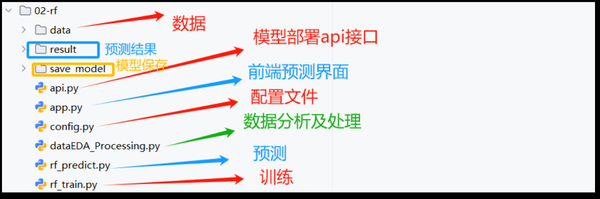
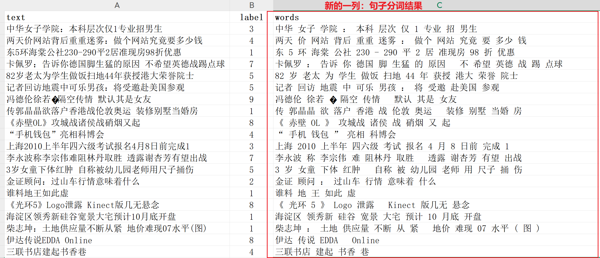
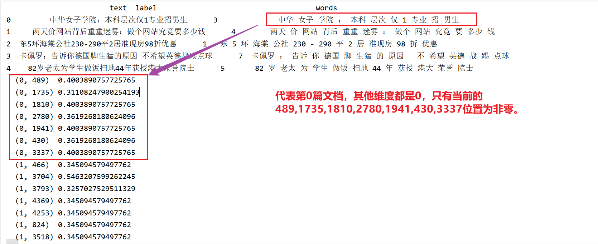
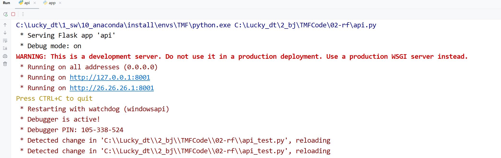
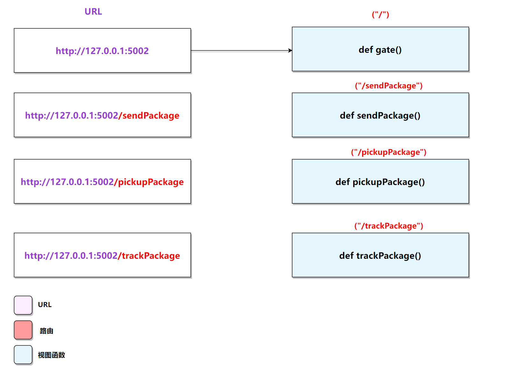
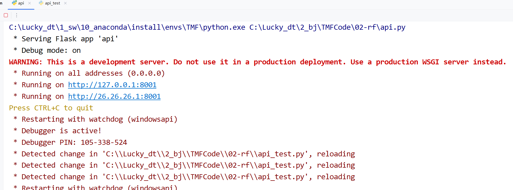

3.1 随机森林模型¶
学习目标
- 掌握利用随机森林快速实现投满分项目的基线模型.
- 能够完成模型部署
- 理解整个算法建模、评估、上线整个流程
为什么要做基线模型？：
基线模型(Baseline Model)是AI建模任务的重要起点，主要核心目标是：
①快速验证任务可行性：基线模型通常简单高效，能够快速验证数据和任务的可行性，为后续优化提供方向。
②提供性能参考：基线模型的性能为后续复杂模型（如深度学习模型）提供对比基准，衡量改进效果。
③降低开发成本：基线模型实现简单，能在资源有限的情况下快速构建一个可用的解决方案。
④发现问题：通过基线模型的训练和评估，可以发现潜在的一些问题，例如数据质量问题。
1. 代码结构图¶

基于随机森林分类建模思路：
①对数据train.txt等相关文件的文本列进行 分词处理， 得到words列。

②采用TF-IDF将words列，转换为数值特征

③利用随机森林算法进行建模、评估与保存。
④模型预测
⑤模型部署，提供api接口
⑥前端预测实现
2. 代码实现¶
2.1 config配置文件¶
代码位置：TMFCode\02-rf\config.py
class Config:
def __init__(self):
self.root_path = '/Users/duyi/duyi7/HeiMa/我的课程/投满分项目/投满分项目-我的备课/03-code/TouManFenClassifier/'
# 原始数据路径
self.train_datapath = self.root_path + '01-data/train.txt'
self.test_datapath = self.root_path + '01-data/test.txt'
self.dev_datapath = self.root_path + '01-data/dev.txt'
# 类别文档
self.class_doc_path = self.root_path + "01-data/class.txt"
# 停用词路径
self.stop_words_path = self.root_path + "01-data/stopwords.txt"
# 处理后的数据路径
self.process_train_datapath = self.root_path + "02-rf/final_data/train_process.txt"
self.process_test_datapath = self.root_path + "02-rf/final_data/test_process.txt"
self.process_dev_datapath = self.root_path + "02-rf/final_data/dev_process.txt"
# 保存模型路径
self.rf_model_save_path = self.root_path + r"02-rf/save_model/rf_model.pkl"
self.tfidf_model_save_path = self.root_path + r"02-rf/save_model/tfidf_model.pkl"
# 模型预测结果
self.model_predict_result = self.root_path + r"02-rf/result/predict_result.txt"
if __name__ == '__main__':
config = Config()
print(config.train_datapath)
2.2dataEDA_Processing数据处理¶
代码位置：
TMFCode\02-rf\dataEDA_Processing.py
导入工具包及初始化配置
import pandas as pd
import jieba
from config import Config
# 初始化配置文件
conf = Config()
step1:读取数据¶
#设置处理的及分析的文件路径，默认为 train.txt
current_path=conf.train_datapath
current_path=conf.test_datapath
current_path=conf.dev_datapath
# 第一步：读取数据
df = pd.read_csv(current_path, sep='\t', names=['text', 'label']) # 读取CSV文件，指定列名为text和label
step2: 进行分词预处理¶
# 第二步：进行分词预处理
def cut_sentence(s):
"""对输入文本进行结巴分词，并限制前30个词"""
return ' '.join(list(jieba.cut(s))[:30]) # 分词后取前30个词并a用空格连接
df['words'] = df['text'].apply(cut_sentence) # 对每行文本进行分词并存储到words列
step3：保存数据¶
# 第三步：保存处理后的数据
if "train" in current_path:
df.to_csv(conf.processt_train_datapath, index=False)# 将处理后的数据保存到CSV文件
print(f"train数据已经处理完成，已经成功保存至：{conf.processt_train_datapath}")
elif "test" in current_path:
df.to_csv(conf.proces_test_datapath, index=False)# 将处理后的数据保存到CSV文件
print(f"test数据已经处理完成，已经成功保存至：{conf.proces_test_datapath}")
elif "dev" in current_path:
df.to_csv(conf.proces_dev_datapath, index=False)# 将处理后的数据保存到CSV文件
print(f"dev数据已经处理完成，已经成功保存至：{conf.proces_dev_datapath}")
2.3 rf_train.py 模型训练脚本¶
代码位置：
TMFCode\02-rf\rf_train.py
导入工具包及初始化配置
import pandas as pd
import pickle
from sklearn.feature_extraction.text import TfidfVectorizer
from sklearn.model_selection import train_test_split
from sklearn.ensemble import RandomForestClassifier
from sklearn.metrics import accuracy_score, precision_score, recall_score, f1_score, classification_report, \
confusion_matrix
from config import Config
pd.set_option('display.expand_frame_repr', False) # 避免宽表格换行
pd.set_option('display.max_columns', None) # 确保所有列可见
conf = Config()
step1:读取数据¶
# 第一步：读取数据
# 读取训练数据集
df = pd.read_csv(conf.processt_train_datapath)[:20000]
words = df["words"]
labels = df["label"]
print(df.head(5))
step2:将文本转换为数值特征¶
注意：目前有非常多的方式可以实现文本到数值的转换，例如one-hot等等，本次采用tf-idf进行文本的数值化处理。它的核心是将文本转化为一组数字（向量），让计算机能处理文字。
TF-IDF介绍¶
TF-IDF（term frequency–inverse document frequency，词频-逆向文件频率）是一种将文本转化为数值向量的向量化方法。它由两部分组成，TF 和 IDF。
- TF 为term frequency,即词频。衡量一个词在一篇文章里出现的频率（出现的次数除以文章总词数）。
- 逆文档频率（inverse document frequency）：IDF 用来衡量一个词在所有文章中的“独特性”。如果一个词只在少数文章中出现（很罕见），它就更能代表这些文章的特殊内容，IDF 分数高，说明它很重要；如果一个词几乎每篇文章都有（很常见），它对区分文章内容没太大帮助，IDF 分数低，说明它不重要。
①TF
#样例数据：
D1: 中华 女子 学院 本科 层次 仅 1 专业 招 男生
D2: 两天 价 网站 背后 重重 迷雾 ： 做个 网站 究竟 要 多少 钱
D3: 东 5 环 海棠 公社 230 - 290 平 2 居 准现房 98 折 优惠
D4: 卡佩罗 ： 告诉 你 德国 脚 生猛 的 原因 不 希望 英德 战 踢 点球
D5: 82 岁 老太 为 学生 做饭 扫地 44 年 获 授 港大 荣誉 院士
第①步，计算词频TF。 $$ \text{TF}(t, d) = \frac{\text{词 } t \text{ 在文档 } d \text{ 中的出现次数}}{\text{文档 } d \text{ 的总词数}} $$
- t为具体的词，（如“本科”）。
- ( d ): 当前文档（如 D1）
- TF作用：衡量当前词在当前文档的频率。考虑到文章有长短之分，为了便于不同文章的比较，进行 “词频” 标准化（归一化），也就有了上述分母。
- 示例：TF("本科",D1) = 1/10
②IDF
第②步，计算逆文档频率。看一个词在所有文章中是否罕见。罕见的词（如“本科”）分数高，常见的词（如“的”）分数低。 $$ \text{IDF}(t) = \log\left(\frac{N}{\text{df}(t) + 1}\right) + 1 $$
-
( N ): 总文档数。
-
df ( t ) 的文档数
-
示例：IDF("本科") =log(5/2) +1 ≈ 0.398 $$ \text{df}(t): 包含词 ( t ) 的文档数。 $$
如果一个词越常见，那么分母就越大，逆文档频率就越小越接近0。这里分母+1，是为了避免分母为0（即所有文档都不包含该词）。
log表示对得到的值取对数。
③TF-IDF
第③步，计算TF-IDF。 $$ \text{TF-IDF}(t, d) = \text{TF}(t, d) \times \text{IDF}(t) $$ 含义：结合 TF 和 IDF，计算词 t 在文档 d 的重要性分数。
④总结
TF-IDF 是一种统计方法，用以评估一字词对于一个文件集或一个语料库中的其中一份文件的重要程度。字词的重要性随着它在文件中出现的次数的增加成正比增加，但同时会随着它在语料库中出现的频率成反比下降。
TF-IDF 的主要思想是：如果某个单词在一篇文章中出现的频率 TF 高，并且在其他文章中很少出现，则认为此词或者短语具有很好的类别区分能力，适合用来分类。
代码实现¶
# 第二步：将文本转换为数值特征
# 读取停用词文件
stop_words = open(conf.stop_words_path,encoding="utf-8").read().split()
tfidf = TfidfVectorizer(stop_words=stop_words)
features = tfidf.fit_transform(words)
# 查看特征,features是稀疏矩阵，稀疏矩阵的格式是 (row, column) value
print(features)
# 查看特征维度 1000行 4687
print(features.shape)
print(list(tfidf.get_feature_names_out()))
print(len(tfidf.get_feature_names_out()))
print(tfidf.vocabulary_)
print(len(tfidf.vocabulary_))
step3:模型训练和模型评估¶
# 第三步：划分训练集和测试集，模型训练和模型预测评估
# 划分数据集
x_train, x_test, y_train, y_test = train_test_split(features, labels, test_size=0.2, random_state=22)
# 训练随机森林模型
model = RandomForestClassifier() # 默认参数
print("训练模型...")
# 使用 tqdm 包装 model.fit 来显示进度条
for _ in tqdm(range(1), desc="RandomForest模型训练进度...."):
model.fit(x_train, y_train)
# 模型预测并评估
print("模型预测评估...")
y_pred = model.predict(x_test)
print("预测结果:", y_pred)
print("准确率:", accuracy_score(y_test, y_pred))
print("精确率 (macro):", precision_score(y_test, y_pred, average='macro'))
print("召回率 (macro):", recall_score(y_test, y_pred, average='macro'))
print("F1分数 (macro):", f1_score(y_test, y_pred, average='macro'))
step4: 模型保存¶
# 第四步：保存模型和向量化器
print("保存模型和向量化器...")
with open(conf.rf_model_save_path + '/rf_model.pkl', 'wb') as f:
pickle.dump(model, f)
with open(conf.rf_model_save_path + '/tfidf_vectorizer.pkl', 'wb') as f:
pickle.dump(tfidf, f)
print("模型和向量化器，保存成功！")
输出结果日志：
模型评估结果如下:
准确率： 0.725
精确率： 0.7636486677943023
召回率： 0.7250275473104539
F1值： 0.7346080014939013
保存模型和向量化器...
模型和向量化器，保存成功！
2.4rf_predict.py 模型预测脚本¶
代码位置：
TMFCode\02-rf\rf_predict.py
导入工具包及初始化配置
import pandas as pd
import pickle
from config import Config
import warnings
warnings.filterwarnings('ignore')
# 设置pandas显示选项
pd.set_option('display.max_columns', None)
# 加载配置
conf = Config()
step1：加载模型及向量化器¶
# 第一步：加载保存的模型和向量化器
print("加载模型和向量化器...")
with open(conf.rf_model_save_path + '/rf_model.pkl', 'rb') as f:
model = pickle.load(f)
with open(conf.rf_model_save_path + '/tfidf_vectorizer.pkl', 'rb') as f:
tfidf = pickle.load(f)
step2：读取dev数据¶
print("读取dev数据...")
dev_df = pd.read_csv(conf.proces_dev_datapath)
dev_df['words'] = dev_df['words']
print("dev数据前5行:")
print(dev_df.head(5))
step3：通过tfidf向量器，转换为数值特征¶
print("转换dev数据为数值...")
dev_features = tfidf.transform(dev_df['words'])
step4：进行模型预测与保存¶
# 第四步：进行预测及保存
print("进行预测...")
dev_predictions = model.predict(dev_features)
# 保存预测结果
print("保存预测结果...")
output_df = pd.DataFrame({'words': dev_df['words'], 'predicted_label': dev_predictions})
output_path = conf.model_predict_result + '/dev_predictions.csv'
output_df.to_csv(output_path, index=False)
print(f"预测结果已保存到 {output_path}")
print("预测结果前5行:")
print(output_df.head(5))
2.5rf_predict_fun.py 模型预测脚本¶
代码位置：
TMFCode\02-rf\rf_predict_fun.py
导入包以及配置文件：
import jieba
import pandas as pd
import pickle
from config import Config
import warnings
warnings.filterwarnings('ignore')
# 设置pandas显示选项
pd.set_option('display.max_columns', None)
conf = Config()
进行单条原样本预测：
# 加载模型
with open(conf.rf_model_save_path, 'rb') as f:
model = pickle.load(f)
# 加载向量化器
with open(conf.tfidf_model_save_path, 'rb') as f:
tfidf = pickle.load(f)
def predict_fun(data):
# 分词
words = " ".join(jieba.lcut(data['text'])[:30])
# 向量化
features = tfidf.transform([words])
# 预测
y_pred_id = model.predict(features)[0]
# 设置对应关系
id2class = {i: line.strip() for i, line in enumerate(open(conf.class_doc_path, encoding='utf-8'))}
y_pred = id2class[y_pred_id]
data["pred_class"] = y_pred
return data
if __name__ == '__main__':
data = {"text": "体验2D巅峰 倚天屠龙记十大创新概览"}
result = predict_fun(data)
print(result)
输入日志：
{'text': '体验2D巅峰 倚天屠龙记十大创新概览', 'pred_class': 'game'}
2.5 api.py接口封装¶
工业界中的AI是指"能落地的AI", 即指在生产环境中可以部署并提供在线, 或离线作业的模型.
- 例如：随机森林模型的在线服务地址（http://127.0.0.1:8001）
api.py服务启动演示：
代码地址：C:\Lucky_dt\2_bj\TMFCode\02-rf\api.py
运行截图：

flask的demo:
Flask框架是当下最受欢迎的python轻量级框架，也是pytorch官网指定的部署框架。 Flask的基本模式为在程序里将一个视图函数分配给一个URL，每当用户访问这个URL时，系统就会执行给该URL分配好的视图函数，获取函数的返回值，其工作过程见图：

from flask import Flask
创建app服务¶
app=Flask(name) #创建快递站
引入路由模块¶
@app.route("/") def gate(): return "hello world" @app.route("/sendPackage") def sendPackage(): return "寄件请先填写单号，请联系快递员小A" @app.route("/pickupPackage") def pickupPackage(): return "取快递请先出示取件码，请联系快递员小C" if name == 'main': app.run(host='0.0.0.0', port=5004, debug=True)
推理延时计算：
import time start_time = time.time() # 计算耗时（毫秒） elapsed_time = (time.time() - start_time) * 1000
用哪些工具？¶
将预测函数封装成 api.py在线服务，需要flask、request工具！
代码位置：
TMFCode\02-rf\api.py
导包及配置文件：
from flask import Flask, request, jsonify
import jieba
import pandas as pd
import pickle
from config import Config
import warnings
from rf_predict_fun import predict
warnings.filterwarnings('ignore')
pd.set_option('display.max_columns', None)
构建flask应用： 注：requests 是一个简单易用的 HTTP 客户端工具，允许我们通过 Python 代码向服务器发送 HTTP 请求并处理响应。
app = Flask(__name__)
@app.route('/predict', methods=['POST'])
def predict():
data = request.get_json()
print(type(data))
print(data)
result = predict_fun(data)
return jsonify(result)
if __name__ == '__main__':
app.run(host='0.0.0.0', port=8001, debug=True)

2.6 api_test.py接口封装¶
代码位置：
TMFCode\02-rf\api_test.py
以下是通过代码进行接口的请求：
import time
import requests
# 定义接口地址
url = 'http://127.0.0.1:8008/predict'
try:
# 测试调用api接口
r = requests.post(url, json={'text': "中国人民公安大学2012年硕士研究生目录及书目"})
print(r.json())
except Exception as e:
print("Error occurred:", e)
2.7 app.py前端预测¶
代码位置：
TMFCode\02-rf\app.py
以下是前端测试接口的代码：
import streamlit as st
import requests
import time
# todo streamlit创建页面
# 设置标题
st.title("投满分分类项目")
st.write("这是一个投满分分类项目")
# 获取用户输入的文本
text = st.text_input("请输入要查询分类的文本")
# todo 后台发送请求
# 准备url
url = 'http://127.0.0.1:8008/predict'
if st.button("点击获取分类！"):
try:
# 发送请求
r = requests.post(url, json={'text': text})
print(r.json())
# todo 显示结果到页面
st.write("预测结果", r.json()["pred_class"])
except Exception as e:
print("Error occurred:", e)
启动app前端： 代码位置：
TMFCode\02-rf\app_run.py
import os
# 执行指令
os.system('streamlit run F:/TouManFenClassifier/02-rf/app.py')
app效果：

2.8本节小节¶
- 本小节完成了基于随机森林的基线模型，该模型以其可解释性强、性能稳定的特点为本次的项目奠定了一个基础。
- 本小节从数据处理到模型构建、训练、评估、部署、前端测试等完成了整个落地流程。